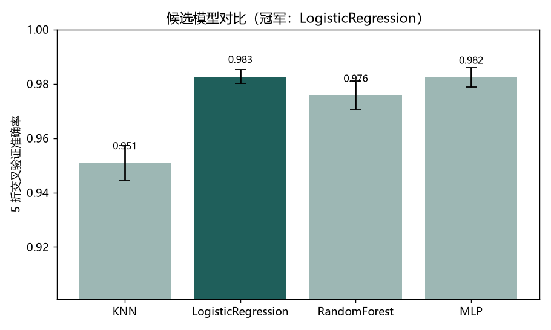
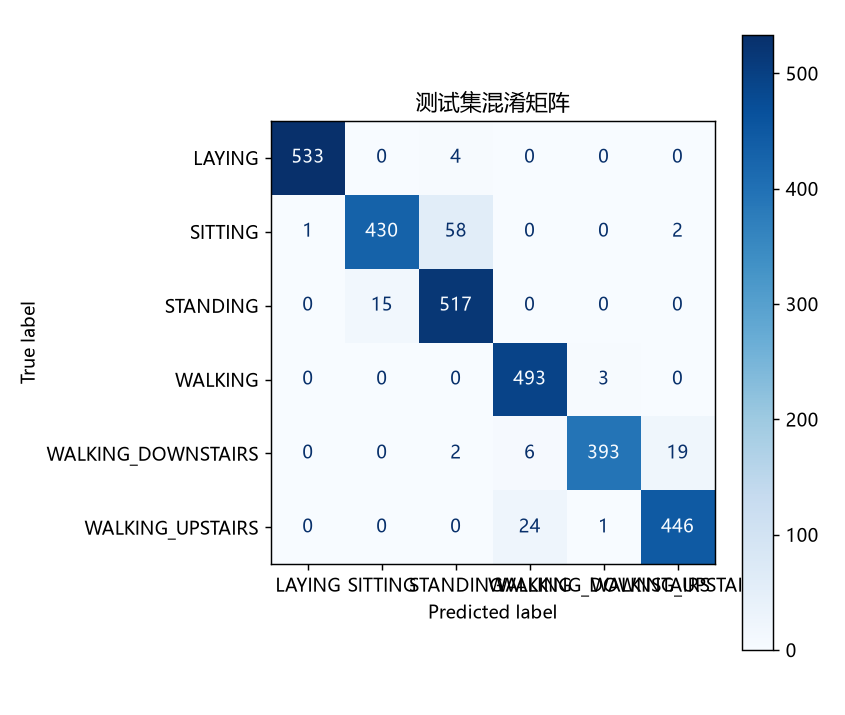
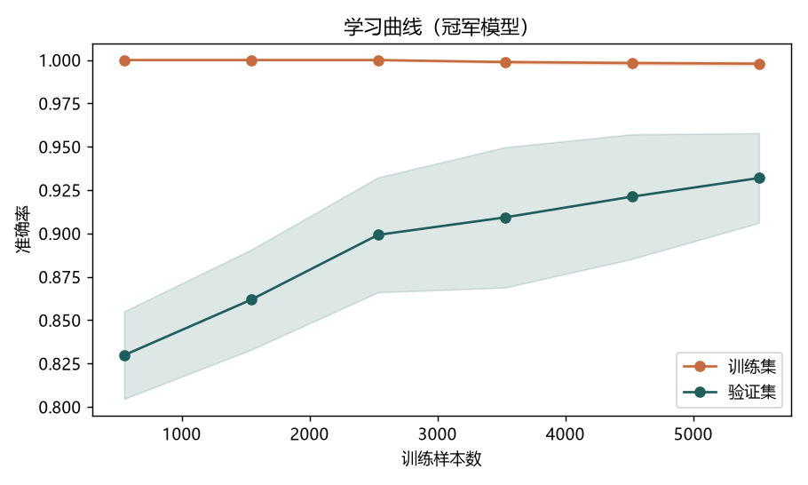
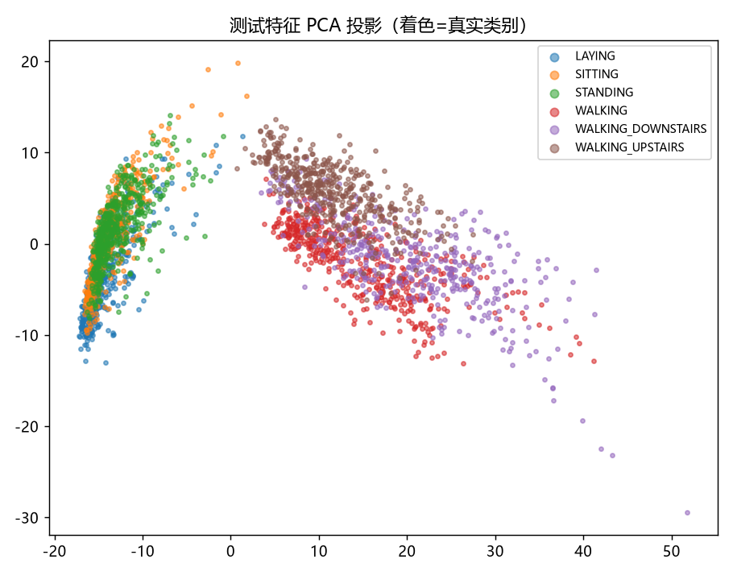

在 UCI《用智能手机识别人体活动》(HAR) 数据集上——三轴加速度计 + 三轴陀螺仪 的 2.56 秒窗口统计特征（561 维）、6 类姿态——走通一整条流程： 数据清洗 → 特征工程 → 训练 → 交叉验证选模 → 评估可视化 → Streamlit 交互 demo。 下面这块 k-NN 决策边界是可交互的直觉演示——调 k 值看边界如何从锯齿变平滑， 这正是完整 pipeline 里"偏差-方差权衡"最直观的一帧。
Sklearn 课程里 24/129 讲的练习都是零散的——每节课跑一个模型，不知道全貌。 我要把它收拢成一个能跑通的完整 pipeline： 拿到一份真实的传感器数据 → 清洗 → 切分 → 训练 → 评估 → 部署成 Streamlit 应用。
数据选的是 手机 IMU（加速度计+陀螺仪）姿态识别——和"机器人 / 穿戴设备用惯性传感器 判断姿态"是同一类问题，也正对我想走的具身智能方向。
这块 demo 用 k-NN 演示最核心的直觉：k 小了过拟合，k 大了欠拟合。 调一调滑块，边界从锯齿变得平滑——比看十张图都有用。
实测结果（真实 HAR，2947 条测试）：逻辑回归 95.4%、MLP 98.2%(CV)、 随机森林 97.6%(CV)、KNN 调参后 95.8%；混淆矩阵如实呈现 HAR 里最难的坐↔站、上楼↔下楼误判。
候选模型：KNN / 逻辑回归 / 随机森林 / MLP。
下面四张图都是这条 pipeline 在真实 HAR 数据上跑出来的，不是示意图。逻辑回归为冠军，测试集准确率 95.4%。



